Performance problems can originate at many layers. If users report 'the network is slow,' where do you start? What is the structured approach to isolating whether the problem is at the network level, the server level, or the application level?
HINT
Think about the troubleshooting methodology: work from the bottom up (physical → network → transport → application) or narrow down by location (capture at different points).
MODEL ANSWER
Structured approach: (1) Capture at the client side. (2) Check Expert Info — are there TCP problems (retransmissions, zero windows)? If yes → network or host resource issue. (3) Check TCP RTT graph — is latency elevated vs baseline? If yes → path problem. (4) Check application response time (time between client request and server response) — if high but TCP RTT is normal → server processing problem. (5) Check IO rate — is the network saturated? If utilization is near 100% during problem → congestion. Each layer narrows the search: TCP issues = network problem. High server response time with clean TCP = application/server problem.
Performance Problem Overview
Finding the top causes of performance problems requires a systematic approach. The most common performance culprits:
Packet loss — triggers TCP retransmissions, slowing all TCP-based applications
Network congestion — high utilization causes queuing, increasing latency
Path latency — long RTT reduces TCP throughput (bandwidth-delay product)
Window size limitations — small receive buffer limits throughput on high-latency links
Application response time — slow server processing delays even with perfect network
DNS failures — slow DNS resolution delays application startup
START WITH EXPERT INFORMATION
Always start performance analysis with Analyze | Expert Information. This quickly reveals the most common TCP problems: retransmissions, duplicate ACKs, zero windows, lost segments, window updates. A clean Expert Info (few or no errors) means the network is likely fine — look at application response times. A high count of TCP errors points to network-layer problems.
🧠
MENTAL NOTE
Performance analysis framework: Expert Info first (TCP errors?), then IO rate (congestion?), then TCP RTT (path latency?), then application response time (server slow?). Clean Expert Info + slow app = server problem. High TCP errors = network/path problem. High IO = congestion.
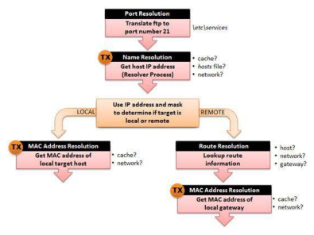
📷Figure 339 — open trace file to view
Figure 339. Errors can occur anywhere in the resolution process
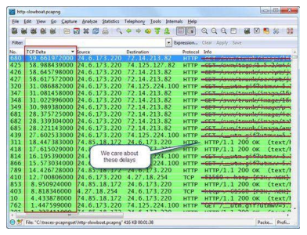
📷Figure 343 — open trace file to view
Figure 343. Don’t get distracted by GET or FIN packets—we expect delays before those types of packets as users click on website links and the browser application does an implicit connection terminatio
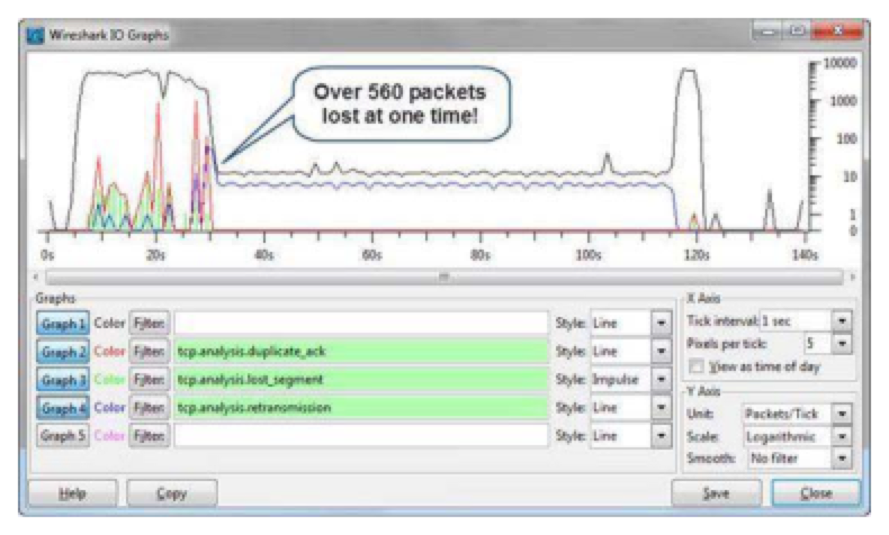
📷Figure 346 — open trace file to view
Figure 346. shows how the massive packet loss kills the network IO rate. TCP doesn’t do well with a large amount of packets lost in a single congestion window.
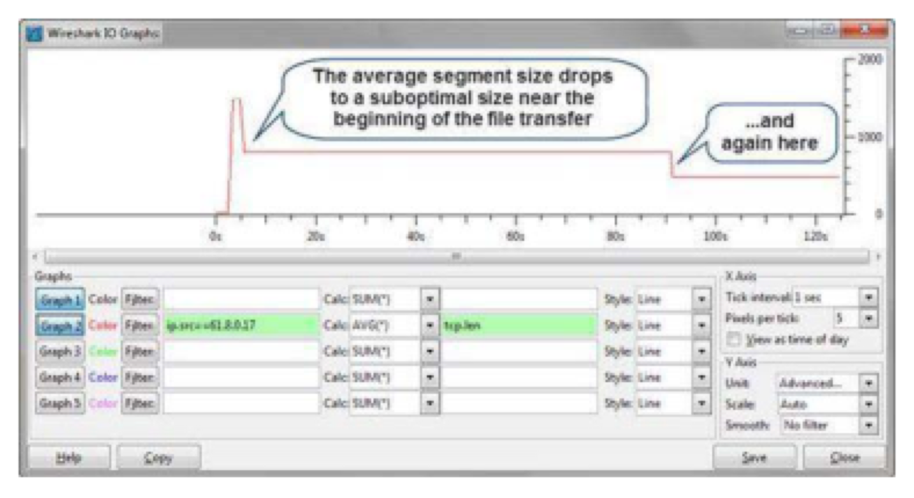
📷Figure 349 — open trace file to view
Figure 349. Graphing tcp.len shows a suboptimal segment size used for the data transfer Look for Congestion Congestion along a network path may cause packet loss, queuing, or throttling back of possib
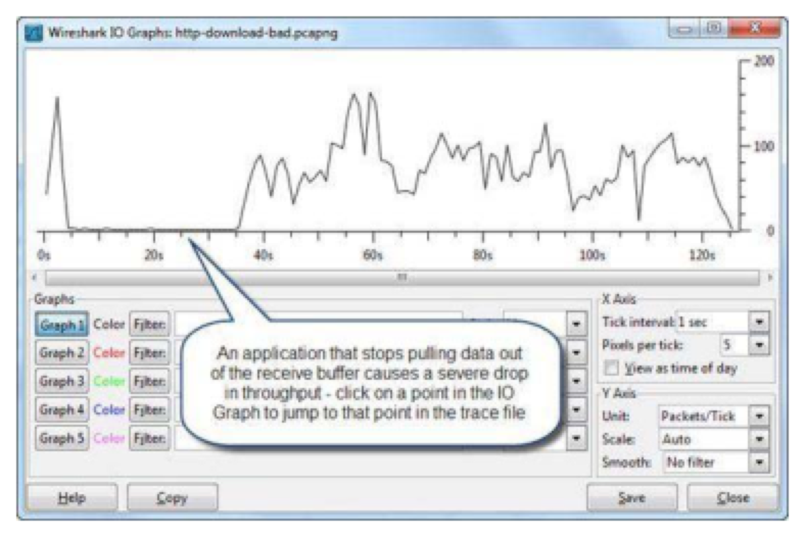
📷Figure 350 — open trace file to view
Figure 350. displays an IO Graph depicting a sudden drop in throughput. This is caused when Internet Explorer stops pulling data out of the TCP receive buffer.
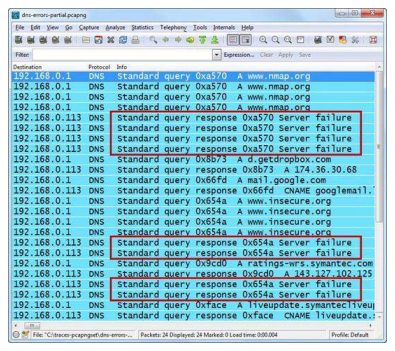
📷Figure 351 — open trace file to view
Figure 351. Evident name resolution problems cause poor performance An Important Note about Analyzing Performance Problems When you are analyzing network performance indica
Ask a Question
Add a Note
💡THINK FIRST · SLOW NETWORKS
Network congestion occurs when utilization approaches line rate and queuing delays mount. But there's another type of 'slow network' that isn't congestion — it's the bandwidth-delay product problem. What is this and when does it matter?
HINT
Think about the relationship between bandwidth, RTT, and TCP window size. On a very high-bandwidth but high-latency link (satellite), what limits TCP throughput?
MODEL ANSWER
Bandwidth-delay product (BDP): maximum bytes in flight = bandwidth × RTT. On a 100Mbps link with 500ms RTT (satellite): BDP = 100,000,000 × 0.5 = 6.25 MB. TCP must be able to have 6.25MB in flight simultaneously to fully utilize the link. Without Window Scaling, the maximum window is 65,535 bytes — limiting throughput to 65,535 / 0.5 = ~1Mbps on a 100Mbps link! Window Scaling (TCP Option 3) solves this by multiplying the window field. High-latency links need both large windows AND window scaling to achieve good throughput.
Analyze Slow Network Communications
Slow network symptoms in Wireshark:
Congestion (Network Overloaded)
IO Graph shows utilization near 100% during slow periods
TCP retransmissions (tcp.analysis.retransmission) — packets lost due to queue overflow
High TCP RTT compared to baseline
Path Latency (Long RTT)
TCP RTT Graph shows consistently high latency to the server
Few TCP retransmissions — the path is reliable but slow
TCP throughput limited by window size (bandwidth-delay product problem)
Solution: ensure Window Scaling is negotiated during TCP handshake
Slow Link Detection
Add tcp.time_delta as a column (requires: Edit → Preferences → Protocols → TCP → Calculate Conversation Timestamps). Sort by tcp.time_delta to find the largest delays in any TCP conversation.
WINDOW SIZE AND THROUGHPUT
TCP throughput is limited by: min(cwnd, rwnd, send buffer) / RTT. On a 10ms RTT LAN with a 64KB window: 64KB / 0.01s = 6.4 MB/s = ~51 Mbps. On a 200ms WAN with 64KB window: 64KB / 0.2s = 320 KB/s = ~2.5 Mbps. Window Scaling is ESSENTIAL for high throughput on high-latency links.
🧠
MENTAL NOTE
Congestion: IO near 100%, retransmissions up, RTT high. Path latency: TCP RTT high, few retransmissions, throughput limited by window. BDP = bandwidth × RTT = minimum window needed for full utilization. Window Scaling: TCP Option 3, negotiated in handshake. Add tcp.time_delta column to find slow spots.
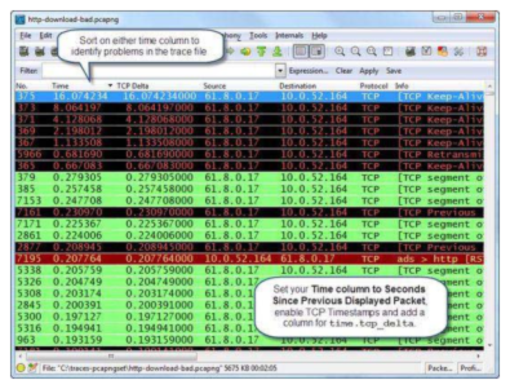
📷Figure 340 — open trace file to view
Figure 340. Sort on the Time column after filtering on a conversation
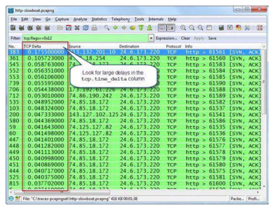
📷Figure 342 — open trace file to view
Figure 342. Check out the roundtrip times between SYN and SYN/ACK packets
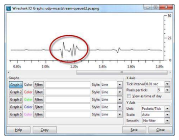
📷Figure 347 — open trace file to view
Figure 347. Traffic that is held in a queue along a path may cause a "heartbeat" look on the IO Graph Analyze Traffic Redirections The most common redirections seen on
Ask a Question
Add a Note
💡THINK FIRST · TCP PERFORMANCE PROBLEMS
The three most common TCP performance problems are retransmissions, duplicate ACKs, and zero windows. Each has a different root cause. Retransmissions indicate packet loss. Duplicate ACKs also indicate packet loss. Zero windows indicate the receiver can't keep up. Which of these three is most likely to be caused by an application problem (not a network problem)?
HINT
Think about who controls the receive window — and what determines how quickly the application empties the receive buffer.
MODEL ANSWER
Zero window is most likely caused by an application problem. The receive window reflects how much space is in the receive buffer. If the application isn't reading data fast enough (slow app, CPU-bound, disk bottleneck), the receive buffer fills up and the window drops to zero. The network is delivering data fine — the host can't process it. Retransmissions and duplicate ACKs are caused by packet LOSS on the network path — the network is dropping packets. Always check: TCP errors (expert info) → if mostly zero windows = receiver application problem. If mostly retransmissions/dup ACKs = network path problem.
TCP Performance Problems
Three key TCP performance indicators:
TCP Retransmissions
Filter: tcp.analysis.retransmission. Cause: packet loss on the network path. Impact: slows ALL TCP applications on the affected path. Each retransmission triggers TCP's congestion control — the congestion window halves, reducing throughput. Diagnose: determine if retransmissions are triggered by Duplicate ACKs (Fast Recovery) or by RTO timeout.
Duplicate ACKs
Filter: tcp.analysis.duplicate_ack. Cause: packet loss — receiver detected a missing sequence number. High Duplicate ACK count = sustained packet loss. On high-latency paths, you may see more than 3 Duplicate ACKs before the retransmission is triggered.
TCP Zero Window
Filter: tcp.analysis.zero_window or tcp.window_size==0. Cause: receiver's buffer is full — application not consuming data fast enough. Impact: data transfer completely stops until the window opens. Diagnose by looking at what the application is doing (CPU utilization, disk I/O, thread blocking). This is NOT a network problem.
Analyze TCP Stream Performance
Select a TCP packet → Statistics | TCP Stream Graph | Time-Sequence Graph (tcptrace). A healthy transfer shows a diagonal line from lower-left to upper-right. Flat spots = stalls (zero window or congestion). Downward steps = retransmissions.
🧠
MENTAL NOTE
TCP perf problems: Retransmissions = packet loss. Dup ACKs = packet loss (receiver sees gap). Zero Window = receiver buffer full (app problem). Distinguish: Dup ACKs → Fast Recovery retransmit. No Dup ACKs → RTO retransmit. Zero Window = watch for window_update to see when buffer drains.
Ask a Question
Add a Note
💡THINK FIRST · APPLICATION RESPONSE TIME
Application response time is the time between a client's request and the server's first response. How do you measure this in Wireshark? And if the network RTT is 5ms but the application response time is 2000ms, where is the problem?
HINT
Think about what happens between the client sending the HTTP GET request and the server sending the HTTP 200 OK response — what is the server doing during that time?
MODEL ANSWER
Measure in Wireshark: find the client's GET request packet → look at the timestamp → find the server's first response packet → calculate the delta. Use tcp.time_delta column, or use Edit → Find Packet → search for the response. If network RTT (measured from SYN→SYN/ACK) is 5ms but application response is 2000ms, the network delivered the request fine (5ms) and delivered the response fine — but the SERVER took ~2000ms to process the request. This is a SERVER PROCESSING problem, not a network problem. Diagnose: check server CPU, database query time, application code.
Application Response Time & Path Analysis
Measuring Application Response Time
Application response time = time from client request to server first response. This is the key metric for determining if a performance problem is network-side or server-side.
The tcp.time_delta on the response packet shows the response time
Interpreting Application Response Time
Response time ≈ RTT: server responded almost immediately — fast server
Response time >> RTT: server processing delay — slow server or slow application
Response time ≈ 0ms but many retransmissions: network dropping packets
Path Analysis — Move Wireshark
If you can't determine from one capture whether the problem is before or after a network device, move Wireshark:
Capture at the client and at the server simultaneously (if possible)
Compare packet timestamps at each location — the delay location reveals the problem point
If packets arrive at the server but the server is slow to respond = server problem
If packets are delayed between client and server = network path problem
THE GOLDEN QUESTION
When a user complains about slowness, ask: 'Is it slow for every application or just one?' Slow for every application = network problem. Slow for only one application = application/server problem. This simple question saves hours of troubleshooting time.
🧠
MENTAL NOTE
Application response time = request to first response. RTT ≈ response time = fast server. Response time >> RTT = slow server/app. Measure with tcp.time_delta column. Move Wireshark to different points to isolate whether problem is before or after a device. Golden question: slow for all apps (network) or one app (application)?
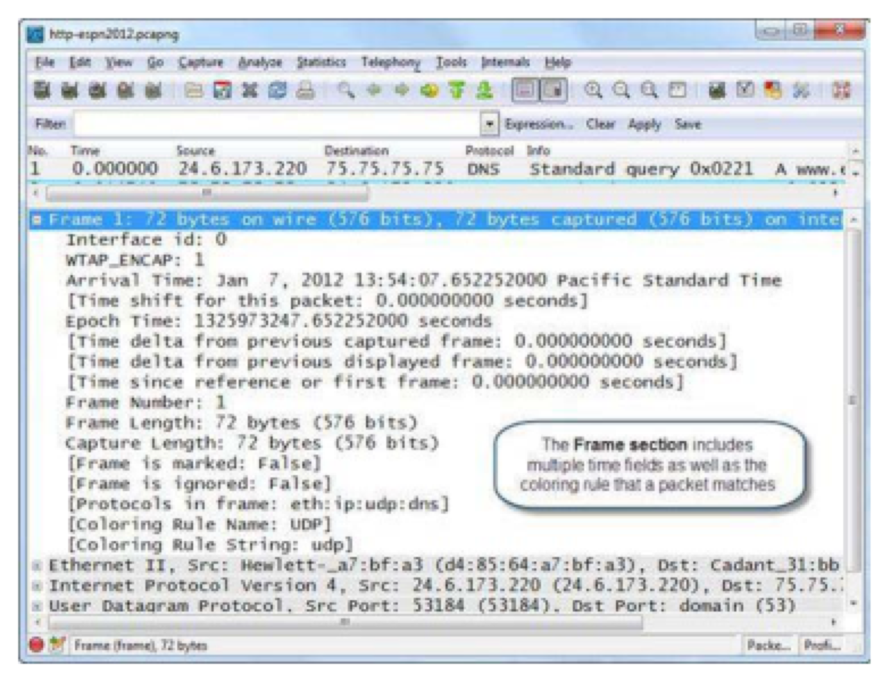
📷Figure 341 — open trace file to view
Figure 341. Expand the Frame section to view time details
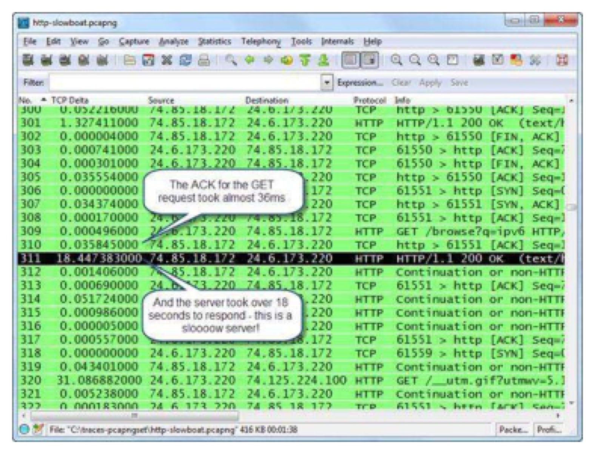
📷Figure 344 — open trace file to view
Figure 344. Yup—we can see the delay is at the server
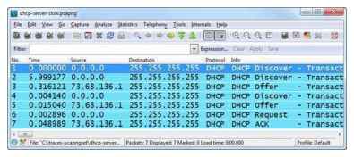
📷Figure 345 — open trace file to view
Figure 345. shows the slow retransmission process of a DHCP client. The original DHCP Discover goes unanswered. The DHCP client waits almost 6 seconds before retransmitting the Discover packet. This ca
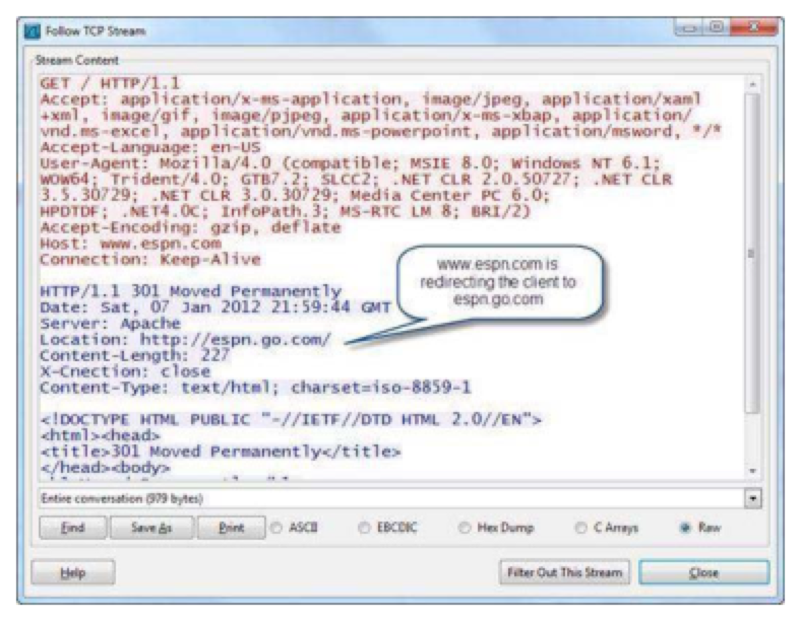
📷Figure 348 — open trace file to view
Figure 348. The web browsing client is redirected to another site Watch for Small Payload Sizes If a 500 MB file is exchanged in 512 byte segments instead of 1,460 byte segments
Ask a Question
Add a Note
Path Analysis Techniques
When a problem is intermittent or location-specific:
Capture at multiple points simultaneously: Compare timestamps to find where delay is introduced
Traceroute + Wireshark: Run a traceroute and capture it — identify the hop where latency increases
TCP RTT Graph: Shows RTT trends — a sudden increase points to a path change
Advanced IO Graph with tcp.analysis.flags: Shows when TCP problems occur relative to traffic volume
Ask a Question
Add a Note
CHAPTER SUMMARY
TL;DR — Chapter 29
Finding the top causes of performance problems requires a systematic approach. Start with Expert Information to identify TCP-layer issues (retransmissions, duplicate ACKs, zero windows). Then check IO rate for congestion. Then check TCP RTT for path latency. Finally, measure application response time to determine if the problem is network-side or server-side.
TCP retransmissions and duplicate ACKs indicate packet loss on the network path. TCP Zero Window conditions indicate the receiver's application can't consume data fast enough — this is an application/host problem, not a network problem. Application response time much greater than RTT indicates server processing delays.
Review Questions
Q29.1
What are the three most common TCP performance problems visible in Wireshark?
HINT
Think about the Expert Information flags you'd see for TCP performance issues.
ANSWER
The three most common TCP performance problems: (1) Retransmissions (tcp.analysis.retransmission) — caused by packet loss on the network path; each retransmission triggers TCP congestion control reducing throughput. (2) Duplicate ACKs (tcp.analysis.duplicate_ack) — also caused by packet loss; receiver detects a missing sequence number and repeatedly requests it. (3) Zero Window (tcp.analysis.zero_window) — receiver's buffer is full because the application can't consume data fast enough; NOT a network problem but an application/host performance issue.
Q29.2
How do you measure application response time in Wireshark?
HINT
Think about the time between client request and server response.
ANSWER
Measure application response time by: (1) Enabling Calculate Conversation Timestamps in TCP preferences (Edit → Preferences → Protocols → TCP → Calculate Conversation Timestamps). (2) Adding tcp.time_delta as a column. (3) Finding the client's request packet and the server's first response packet. (4) The tcp.time_delta value on the response packet shows how long the server took to respond. Alternatively, subtract the request packet timestamp from the response packet timestamp manually. This measurement tells you: if response time ≈ RTT, the server is fast. If response time >> RTT, the server is slow to process.
Q29.3
What is the bandwidth-delay product and why does it matter for TCP performance?
HINT
Think about the relationship between bandwidth, RTT, and how many bytes can be 'in flight' simultaneously.
ANSWER
The bandwidth-delay product (BDP) is the maximum amount of data that can be 'in flight' (unacknowledged) on a TCP connection: BDP = bandwidth × RTT. This determines the minimum TCP window size needed to fully utilize a link. Example: on a 100Mbps link with 200ms RTT, BDP = 100,000,000 × 0.2 = 2.5MB. Without Window Scaling, the maximum TCP window is 65,535 bytes (~64KB), limiting throughput to 64KB / 0.2s = ~2.5 Mbps on a 100Mbps link. Window Scaling (TCP Option 3) multiplies the window to overcome this limitation on high-latency links.
Q29.4
A user reports that their application is slow. The Wireshark Expert Info shows no TCP errors. What does this indicate?
HINT
Clean Expert Info means the network is behaving normally — where does the problem lie?
ANSWER
If Expert Information shows no (or baseline-normal) TCP errors, the network is delivering data reliably. The performance problem is likely at the application or server layer. Investigate: (1) Server processing time — measure application response time (time from request to first response). If much greater than TCP RTT, the server is slow to process. (2) Database query time — the server might be waiting on a slow database. (3) Server-side resources — CPU, disk I/O, or memory constraints. Ask: is the slowness affecting ALL applications (network problem) or just this one application (application problem)?
Q29.5
What is the first step in a systematic performance analysis?
HINT
Think about where to start when you don't know if the problem is network or application.
ANSWER
The first step is to check Analyze | Expert Information. Expert Information quickly summarizes all TCP anomalies detected in the trace file — errors (retransmissions, bad checksums), warnings (zero windows, duplicate ACKs), notes, and chats. If Expert Info shows many TCP errors, focus on the network path. If Expert Info is clean, the network is likely fine — investigate application response times and server performance. Expert Information is the fastest way to triage a performance problem and determine which layer deserves the most attention.